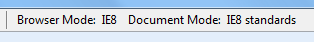

This page may look different in IE8 and IE9 in IE8 mode, even though theoretically they should be the same.
This page documented a difference between IE9 beta's IE8 mode and IE8 that no longer applies to IE9 RC.
.test {
// (height, width, border) …
background: rgba(50,200,50, 0.8) url(bg-loaded.png);
}If the above div has a green background (as opposed to none/white), your browser understands rgba() color notation;
if it reads “Background Loaded ✓” then the image defined in the same CSS declaration as the rgba() color
has been loaded.
IE8 doesn’t give the box a background at all, as expected (this is now matched by IE9 RC’s IE8 mode):
IE9 (beta but not the newer RC) renders the box background, EVEN in IE8 mode!:
No seriously, IE8 mode:

Just for reference, here’s Webkit/Chrome 8 (IE9 RC “IE9 standards mode” is similar):
IE8 ≠ IE9 in IE8 document and browser mode. So you can’t expect to only test for compatibility with IE8 by emulating it in IE8.
I strongly suspect IE9 is using the same CSS parsing — or at least color value parsing — in IE8 emulation mode.
The discrepancy explored here has been fixed in IE9 RC.